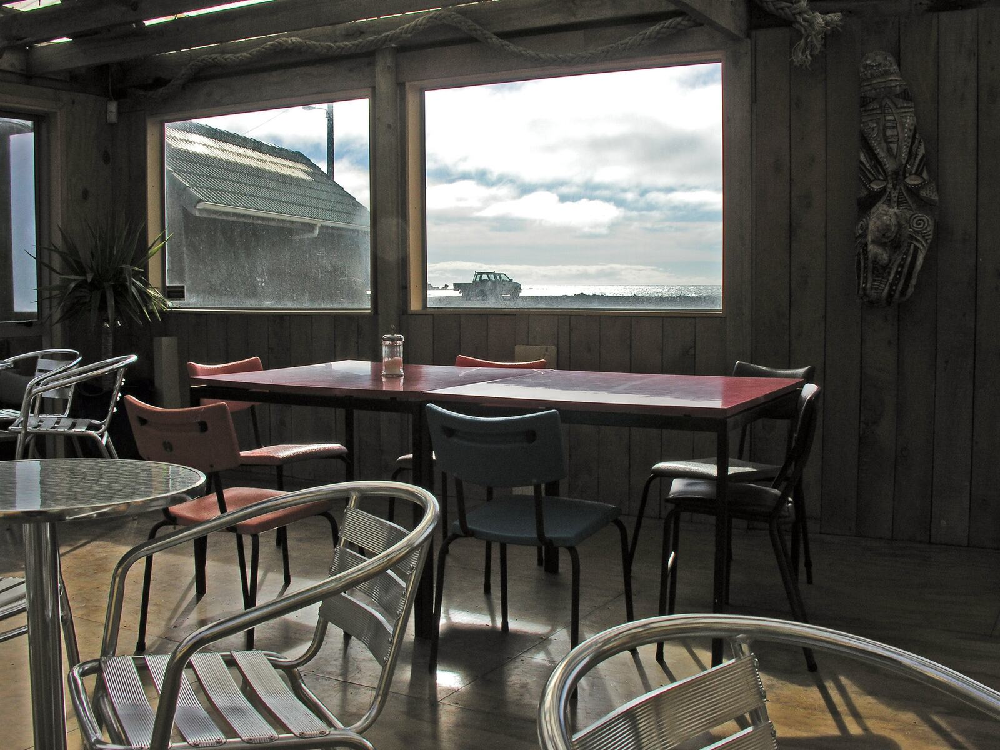
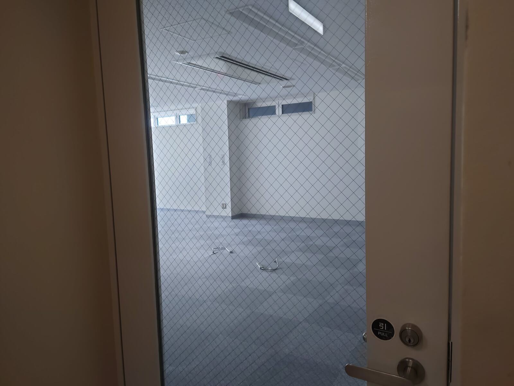

営業中
床や壁の傷みが目立ってきた
客席や通路の床、壁の汚れや傷など、営業を続けながら直したい箇所。開店前・閉店後・定休日など、作業できる時間帯をお知らせください。
店舗・事務所・施設の床や壁の傷み、建具の不具合、退店時の原状回復。営業への影響を確認しながら、作業できる日時を含めてご相談いただけます。

営業中の店舗や施設では、作業の時間帯や周囲への配慮が工程を左右します。条件を伺ったうえで、施工パートナーの手配を調整します。
客席や通路の床、壁の汚れや傷など、営業を続けながら直したい箇所。開店前・閉店後・定休日など、作業できる時間帯をお知らせください。

テナント契約の終了に合わせた原状回復。範囲は契約内容や貸主様の指定によって決まるため、契約書や指示書の内容をあわせてお知らせください。
出入口や個室の扉の開閉が重い、閉まりきらないなどの不具合を相談したい。
松山周辺に複数の店舗や拠点があり、まとめて相談できる窓口がほしい。
本部から遠い店舗の修繕を、写真で状況を共有しながら進めたい。
営業中の店舗や施設では、作業の条件が工程と施工パートナーの手配に大きく関わります。分かる範囲でお知らせください。
分かる範囲で構いません。不明な点は、内容確認の際にこちらからお聞きします。
営業時間外や定休日の作業をご希望の場合も、まずはご相談ください。施工パートナーの状況により、ご希望の日時で調整できない場合があります。
作業日時のご希望は、最初のご相談時にお知らせください。
ご相談を受け付けてから写真報告まで、次の12段階で進めます。各段階で、次に何が起きるかをお知らせします。
PHASE 1受付・確認
PHASE 2現地調査・見積
PHASE 3発注・施工
PHASE 4完了
所要日数は、案件の内容と施工パートナーの状況によって異なります。そのため一律の日数はお約束せず、段階ごとに予定をご案内します。正式な見積は、必要な現地確認と施工パートナーの判断を経てから提出します。
店舗・施設の修繕のご相談はこちら作業日時の条件もあわせてお知らせください。
今ある1件を見積相談店舗・施設運営者様から
ご相談いただけます。作業できる日時をお知らせください。施工パートナーの状況を確認のうえ、対応できるかどうかをご回答します。
ご相談いただけます。施設ごとに工事申請や作業時間のルールがあるため、施設側の決まりをあわせてお知らせください。
原状回復の範囲は、テナント契約の内容や貸主様の指定によって決まります。契約書や貸主様からの指示書をご確認のうえ、内容をお知らせください。

状況が分かる写真と、物件の所在地・修繕内容をお送りいただければ、内容を確認のうえ担当者からメールまたはお電話でご連絡します。写真がない場合も、内容をご記入のうえご相談いただけます。